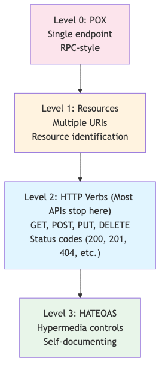
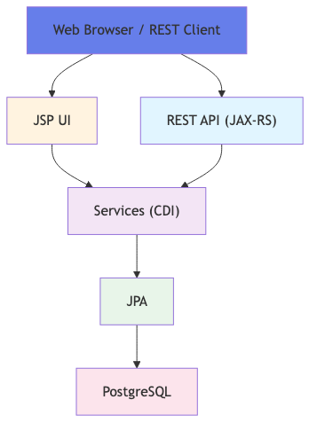

Course Content
All sections — click a title to expand.
🌐 REST Principles and Richardson Maturity Model
What is REST?
REST (Representational State Transfer) is an architectural style defined by Roy Fielding in 2000. It is based on resources, representations, and HTTP as the engine of application state.
Level 0 — Plain Old XML / POX
- HTTP used as a simple transport protocol
- Single endpoint for all operations — e.g.
POST /api - The operation is described in the request body
- No resource distinction — comparable to RPC over HTTP
Level 1 — Resources
- Resources identified by distinct URIs
- E.g.
POST /clients,POST /clients/42 - HTTP still used as a tunnel — HTTP verbs not respected
- Improvement: each resource has its own endpoint
Level 2 — HTTP Verbs
- Correct semantic use of HTTP verbs:
GET,POST,PUT,DELETE,PATCH - Meaningful HTTP status codes: 200, 201, 204, 400, 404, 409…
- E.g.
GET /clients,POST /clients,PUT /clients/42,DELETE /clients/42 - The vast majority of modern REST APIs operate at this level
Level 3 — HATEOAS
- HATEOAS (Hypermedia As The Engine Of Application State)
- Responses contain links to possible next actions
- The client discovers the API dynamically through hyperlinks
- E.g.: a
GET /clients/42response includesself,update,delete,orderslinks - Rarely reached in practice — most relevant for evolving public APIs

📌 Jakarta REST Annotations
@Path — Resource identification
@Path("/clients")on the class — root path of the resource@Path("/{id}")on a method — sub-path with path parameter- Paths compose:
/clients/{id}
HTTP Verbs — @GET @POST @PUT @DELETE @PATCH
@GET— read a resource or list (idempotent, no body)@POST— create a new resource (non-idempotent)@PUT— complete replacement of an existing resource (idempotent)@DELETE— delete a resource (idempotent)@PATCH— partial update of a resource
Request parameters
@PathParam("id")— extracts a URI segment:/clients/{id}@QueryParam("page")— URL query parameter:?page=2&size=10@HeaderParam("Authorization")— value of an HTTP header@BeanParam— groups multiple parameters into a single object
Content negotiation
@Produces(MediaType.APPLICATION_JSON)— MIME type of the response@Consumes(MediaType.APPLICATION_JSON)— expected MIME type of the request body- Common values:
APPLICATION_JSON,APPLICATION_XML,TEXT_PLAIN
@ApplicationPath — Application entry point
- Class extending
jakarta.ws.rs.core.Applicationannotated@ApplicationPath("/api") - Defines the global prefix for all Jakarta REST resources
- Can be empty to delegate configuration to the server

📦 JSON-B — JSON Serialization
JSON-B (Jakarta JSON Binding) is the standard Jakarta EE specification for bidirectional conversion between Java objects and JSON.
@JsonbProperty — Field renaming
@JsonbProperty("full_name")on a field — the JSON will usefull_nameinstead of the Java name- Useful for following snake_case conventions in REST APIs
@JsonbTransient — Field exclusion
@JsonbTransienton a field — excluded from JSON serialization and deserialization- Ideal for passwords, tokens, sensitive fields
@JsonbDateFormat — Date format
@JsonbDateFormat("yyyy-MM-dd")— controls the serialization format for dates- Applicable to
LocalDate,LocalDateTime,ZonedDateTimefields
Naming Strategies
PropertyNamingStrategy.LOWER_CASE_WITH_UNDERSCORES— automatic camelCase → snake_case conversionPropertyNamingStrategy.UPPER_CAMEL_CASE— PascalCase for all fields- Configurable via
JsonbConfigor@JsonbNillable,@JsonbPropertyOrder
Custom Adapters
- Implement
JsonbAdapter<Original, Adapted>for custom conversion - Methods
adaptToJson()andadaptFromJson() - Registration via
@JsonbTypeAdapteron the field or viaJsonbConfig
Circular references
- Common issue with bidirectional JPA entities (e.g.
Client↔Order) - Solution 1:
@JsonbTransienton the inverse owning side - Solution 2: use DTOs without cycles instead of entities directly
- Solution 3: custom adapter that breaks the recursion
⚠️ Exception Handling
Jakarta REST provides an elegant mechanism to intercept exceptions and convert them into structured HTTP responses.
ExceptionMapper<T>
- Jakarta REST interface to implement:
ExceptionMapper<MyException> - Single method:
Response toResponse(MyException exception) - Allows returning a JSON body with error message, code, affected field
@Provider
- Jakarta REST annotation indicating to the runtime that this class is an infrastructure component
- Automatic registration of ExceptionMapper, MessageBodyWriter, ContainerFilter…
WebApplicationException
- Base Jakarta REST exception — wraps a
Responsedirectly - Ready-to-use subclasses:
NotFoundException(404),BadRequestException(400),NotAuthorizedException(401),ForbiddenException(403) - Can be thrown directly from a resource method
Custom exceptions
- Create a business exception
ClientNotFoundException extends RuntimeException - Create the corresponding mapper
@Provider ClientNotFoundExceptionMapper - Complete decoupling between business logic and HTTP protocol
Validation with Bean Validation
@NotNull— the field cannot be null@Size(min=2, max=100)— length constraint on a string or collection@Email— valid email address format@Validon the Jakarta REST method parameter to trigger validation- Violations are reported via
ConstraintViolationExceptioninterceptable by a mapper
🔌 MicroProfile Rest Client
MicroProfile Rest Client allows consuming remote REST APIs through a typed Java interface — without HTTP boilerplate code.
@RegisterRestClient
- Annotation placed on the interface — registers the client with the MicroProfile runtime
configKey— configuration key for the base URL inmicroprofile-config.properties- E.g.:
@RegisterRestClient(configKey="currency-api")
Annotated @Path interface
- The interface uses the same Jakarta REST annotations as server resources:
@Path,@GET,@POST,@PathParam,@QueryParam,@Produces,@Consumes - No implementation to write — the runtime generates the proxy automatically
@Inject @RestClient
- CDI injection of the client with the
@RestClientqualifier - The runtime injects the generated proxy — usage identical to a local dependency
Configuration in microprofile-config.properties
currency-api/mp-rest/url=https://api.exchangerate.hostcurrency-api/mp-rest/connectTimeout=3000currency-api/mp-rest/readTimeout=5000currency-api/mp-rest/scope=jakarta.enterprise.context.ApplicationScoped
ResponseExceptionMapper — Remote error handling
- Implement
ResponseExceptionMapper<RuntimeException>to transform error responses into Java exceptions - Method
toThrowable(Response response)— inspects the status and returns the appropriate exception - Registration with
@RegisterProvider(MyExceptionMapper.class)on the client interface
🔗 REST + CDI Integration
Jakarta REST and CDI integrate natively in Jakarta EE — Jakarta REST resources are full CDI beans.
@ApplicationScoped CDI service in a REST resource
- Direct injection via
@Injectin the Jakarta REST resource class - The resource can itself carry a CDI scope (
@RequestScoped,@ApplicationScoped) - Best practice:
@RequestScopedscope for Jakarta REST resources
CDI interceptor on REST resources
- CDI interceptors (
@Logged,@Audited…) also apply to Jakarta REST methods - Allows adding logging, security, or metrics without modifying resource code
CDI Events triggered by REST operations
- Inject
Event<ClientCreatedEvent>in the Jakarta REST resource - Fire the event after a successful operation (create, update, delete)
- CDI observers react in a decoupled way: notifications, audit, cache invalidation
CDI Qualifiers with Rest Clients
- Multiple implementations of the same client interface can be distinguished by CDI qualifiers
- E.g.:
@Productionand@Stagingclients configured on different URLs - Combination of
@RegisterRestClient+ CDI qualifier on the interface
📖 OpenAPI and Documentation
MicroProfile OpenAPI automatically generates /openapi documentation (YAML/JSON format) from Java annotations.
@OpenAPIDefinition — Global metadata
- Placed on the
Applicationclass or a configuration class - Defines
info(title, version, description),servers,tags,security
@Operation — Endpoint documentation
summary— short summary of the operationdescription— detailed long descriptionoperationId— unique identifier used by client generatorstags— logical grouping in the Swagger UI
@APIResponse — Response documentation
responseCode— HTTP code of the documented responsedescription— explanation of the response casecontent— schema of the response body with@Contentand@Schema
@Schema — DTO structure
- Placed on DTO classes and their fields
description,example,required,minimum,maximum- Enriches the generated documentation with concrete examples
@Parameter — Parameter documentation
- Documents
@PathParam,@QueryParam,@HeaderParam in(path/query/header),required,description,schema
/openapi endpoint
- Automatically available at
GET /openapi(YAML) orGET /openapi?format=JSON - Swagger UI often accessible at
/swagger-uidepending on the runtime
🔢 HTTP Codes and Best Practices
The choice of HTTP status code is fundamental for a semantically correct and predictable REST API.
Success codes
- 200 OK — generic success for GET, PUT, PATCH with response body
- 201 Created — resource created successfully (POST) — include the
Locationheader with the URI of the created resource - 204 No Content — success without response body (DELETE, PUT without return)
Client error codes (4xx)
- 400 Bad Request — malformed request, failed validation, invalid data
- 401 Unauthorized — authentication required or token invalid/expired
- 403 Forbidden — authenticated but without the necessary permissions
- 404 Not Found — requested resource does not exist
- 409 Conflict — state conflict: duplicate, stale version (optimistic lock), incompatible state
Server error codes (5xx)
- 500 Internal Server Error — unhandled internal error — never expose stack traces
REST best practices
- ✅ Use plural resource names:
/clientsnot/client - ✅ Always return the
Locationheader after a 201 POST - ✅ Include a structured JSON error body for 4xx and 5xx
- ✅ Version APIs:
/api/v1/clientsor via Accept Header - ✅ Never return 200 with an error body — common antipattern